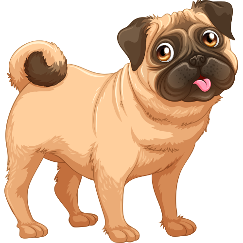

Deskripsi Anjing

Anjing adalah hewan mamalia yang telah mengalami domestikasi dari serigala sejak 15.000 tahun yang lalu atau mungkin
sudah sejak 100.000 tahun yang lalu. berdasarkan bukti genetik berupa penemuan fosil dan tes DNA. Anjing telah berkembang
menjadi ratusan ras dengan berbagai macam variasi, mulai dari ukuran anjing dan warna rambut anjing yang beraneka ragam.
Hewan ini merupakan jenis hewan karnivora. Anjing merupakan hewan sosial sama seperti halnya manusia. Kedekatan pola prilaku
anjing dengan manusia menjadikan anjing bisa dilati, diajak bermain, tinggal bersama manusia, dan diajak bersosialisasi dengan
manusia dan anjing yang lain.